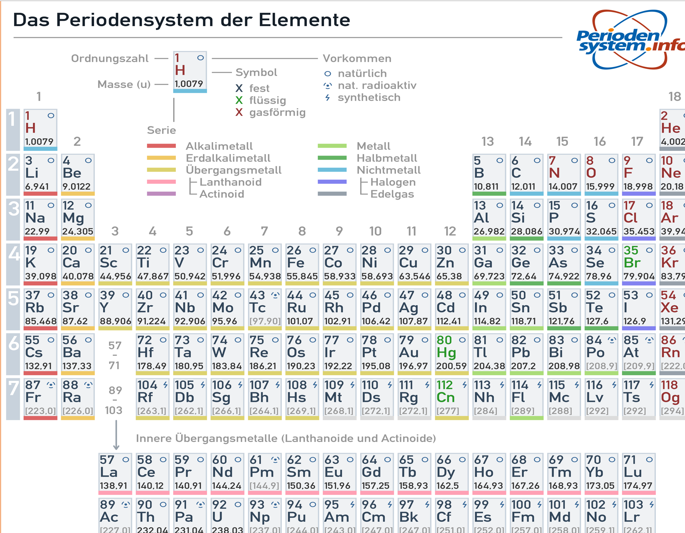
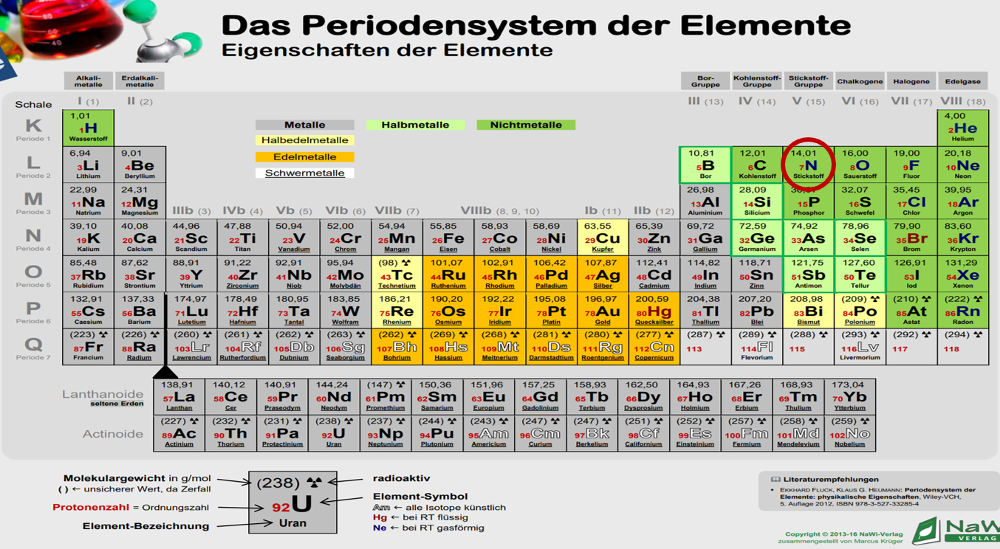

Hier könnt ihr noch einmal ein Periodensystem sehen!
Schauen wir uns mal am Beispiel des Elements Stickstoff den Aufbau des PSEs genauer an.
Das Symbol dieses Elements wird mit einem großen „N“ bezeichnet. Das kommt aus dem lateinischen („Nitrogenium“) und befindet sich in der Mitte des Kästchens.
Darunter steht der Name des Elements, in unserem Fall Stickstoff.
In der oberen Ecke ist die Atommasse abzulesen. Sie wird in der Einheit klein „u“ angegeben. Das kleine u steht für die atomare Masseneinheit „Unit“ und ist somit eine Einheit der Masse. 1u entspricht 1,661 10 -27 kg, also wie man erkennen kann ist so ein Atom wirklich richtig leicht.
In der linken unteren Ecke des Kästchens oder in unserem Fall in der Mitte vor dem Symbol (N), ist die Ordnungszahl zu entnehmen, also 7. Diese nummeriert nicht nur die Elemente durch, sondern gibt auch die Anzahl von Protonen im Kern an, sowie die Anzahl von Elektronen. Wenn man nun die Atommasse, also 14 minus die Ordnungszahl, bei uns 7 rechnet, kommen wir auch schon auf die Neutronenzahl 7.
< Letzte Seite Nächste Seite >